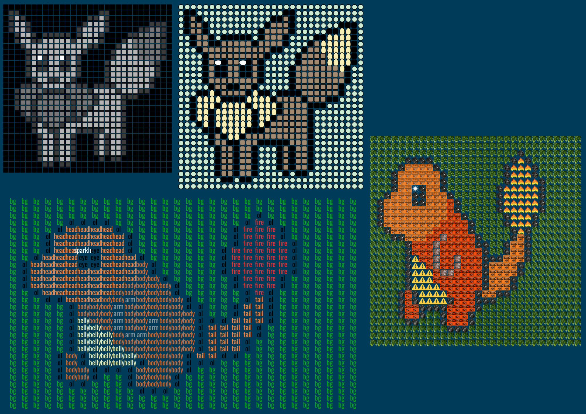

Project 3

Exercise 5 - Phase 1: Preview
Phase 1 - Version 1 Image

Run Exercise 5 Phase 1
See code for Exercise 5 Phase 1
Excercise 5 - Phase 2: Final Version
Run Exercise 5 Phase 2
See code for Exercise 5 Phase 2
My group members were Alyssa Guardado and Jasmine Mirzamani. Our theme for Exercise 5 was Pokemon characters,
and we made grid arrays of size 30x30. I created 8 custom functions in total to remap the grid arrays.
Based on my 2 grid arrays, I have 7 distinct mapped images and each are mapped twice using
different translations, rotations, and scale.
I also have 2 more mapped images based on my group's grid arrays (one from Alyssa and one from Jasmine)
and each are also mapped twice.
In total, I have 18 mapped images in Exercise 5.
My numerical grid array represents the Pokemon character Eevee, which looks like a deer.
For the numerical data, I created three mapping functions that transforms the data into an image of Eevee.
The first transforms the numbers into a greyscale pixel grid, where larger values are lighter shades.
The second function transforms it into a grid of colorful shapes and uses the mod function in an if statement
to control the offset for each row . This makes the grid staggered a bit to the left and right.
The last mapping function for the numerical data transforms it into a grid of bitmap images.
My text grid array represents the Pokemon character Charmander, which is an orange fire-type pokemon.
The strings in this grid describe the part of the character, such as 'body' or 'head' and 'hp' for 'health points'.
For this data of strings, I created four mapping functions to transform the data into an image of Charmander.
The first function presents the strings in a grid of colorful text.
The second function transforms the strings into a grid of bitmaps that represent Charamander, so
I collected bitmaps of fire and caution signs. The bitmaps in this grid are also staggered
using an offset based on the modulo of the row numbers.
The thrid function transforms the strings in to a grid of several colorful shapes, such as circles, triangles, and squares.
The last function maps the strings to grid of text where each text string is slightly rotated to the right, and it alternates
the color of every other column using the modulo.
For my group's grid arrays, I used Jasmine's numerical grid array and remapped it using my function mapNumToBitMaps().
That is the same function that maps my numerical grid array, but passed with a different image array.
I also used Alyssa's numerical grid array and I remapped it to a grid of colorful pixels.
Clock Brainstorming List & Sketches
See Google Slide Deck
Sketch 1
Each column represents an hour in a 24-hour clock.
Each row represents a different activity, and multiple activities can be happening at once.
The rectangles that represent the activity would increase per minute.
Sketch 2
The images represent the activity and they would change according to the time I would normally do that activity.
The number of smaller images represents the minute and the number of larger images represent the hour.
This sketch best reflects where I ended up going design wise for project 3 because I used images to represent
my activites in my completed project 3 clock.
Project 3 - Personalized Clock
Run Project 3
See code for Project 3
My approach to creating my personal clock was to use images that represent my daily activites according to the time I
usually do those activities.
My clock counts the time in a 24-hour format,
and I created a horizontal staggered grid pattern for each second, minute, and hour.
The seconds grid is at the top and is represented by the smallest size images.
The minutes grid is in the middle and is represented by medium sized images.
The hours grid is at the bottom and is represented by the largest size images.
For example, in the afternoon, I usually watch an episode of a show on Amazon Prime video.
This is represented in my clock at 16:30 to 17:30, where the seconds image is of an Amazon FireStick TV remote control,
the minutes image is a poster of the show "Mr Robot" that I've been watching, and the hours image is of
the Amazon Prime video logo.
In my clock, the hour images accumulate according to the activity corresponding to that previous hour, but the minutes and
seconds images will always accumulate according to the current activity.
For example, when the time changes from 17:30 to 17:31 and my activity changes from watching the TV show to feeding my dogs,
all the seconds and minutes images that were previously displayed on the screen will become a dog bowls and dog treats,
respectively.
I created it this way so that as the hours go on in a day, the hours can be looked back upon to see how my activities progressed.
I also have alarms in my clock where text of a short description of the activity shows up in the upper right corner for the
first 40 seconds when the activity begins. Using the millis() function, I have smaller text that rhythmically shows up below the seconds grid that describes what I also do during some of the activities.
For example, I usually snack on crackers during my study/homework time and when playing video games, so text saying
"Eat snack - crackers" periodically shows on the screen during those times.
To further represent the passage of time throughout the day, the background color changes according to the time of day or night.
The background is dark blue at night, yellow at sunrise, progresses to brighter shades of blue up to the afternoon, then progresses to darker shades of blue in the evening. In addition, there is a sun and moon that rises and sets on the right side of the canvas, according to the hour of the day/night.

{kind=link}
{kind=link}
{kind=link}
{kind=link}
{kind=link}
{kind=link}
{kind=link}
{kind=link}
{kind=link}
{kind=link}
{kind=link}
{kind=link}
{kind=link}
{kind=link}
{kind=link}
{kind=link}
{kind=link}
{kind=link}